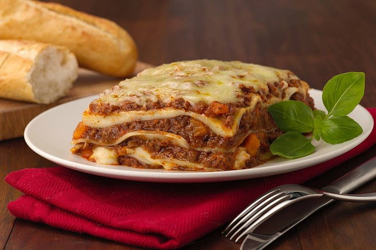

Lasaña

Descripción
Aquí encontrarás la receta tradicional para hacer paso a paso lasaña de carne casera.
Este plato es famoso en todo el mundo, ¡no solo en Italia!.
Ingredientes
- 500 gr. de carne (mezca de cerdo y ternera)
- 2 zanahorias
- 150 gr. de bacon o panceta
- 250 gr. de tomate
- 100 ml de AOVE
¿Cómo se hace?
- Calentamos una cazuela grande de agua, la más ancha de casa. Cuando empiece a hervir echamos 2 puñados generosos de sal.
- Introducimos las láminas de lasaña una a una sin que se toquen (para que no se peguen entre ellas). Ahora podemos encontrar infinidad de tipos de lasaña donde no hace hidratarla como se hacía antes. En casa muchas veces para ahorrar tiempo empleo las que se hidratan con la bechamel y el jugo que suelta la salsa al hornear.
- Si lo hacéis de la manera tradicional tenemos que remover con una cuchara de madera y en unos 10 minutos sacamos las láminas. Las estiramos encima de unas hojas de papel absorbente de cocina. Aunque os parezca que no están, acabarán haciéndose en el horno.
- El siguiente paso será lavar muy bien todas las verduras que vamos a emplear en el relleno. En la receta os aconsejo el relleno de la clásica salsa boloñesa, zanahorias, ajo, pimientos y cebolla.
Volver a la página principal